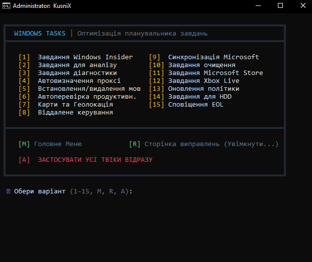

Features
Windows Tasks optimization
Disabling Telemetry and Data Collection (RAC, Diagnostics)
Disabling Background Performance Checks (WinSAT)
Disabling Maps, Geolocation, Xbox Live, and the Microsoft Store
Apply all tweaks with a single click
